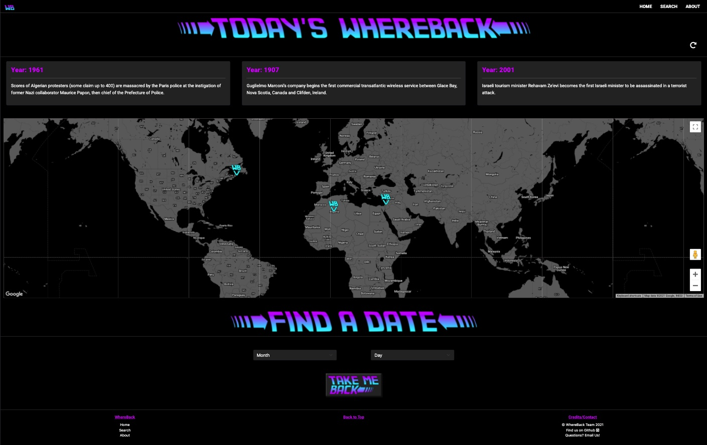

The WhereBack Machine
The WhereBack Machine is a historical throw-back web application utlizing Wikipedia's "On this Day" API. On this date in history, or on the date of your choosing, learn about historical events and where those locations are in the modern world.

Personal Tasks
- Site functionality of initial search and user requested searches.
- Data fetching event info and geolocations by a combination of Historical APIs and Wikipedia webscraping.
- Search and Reset button functionality.
Skills
JAVASCRIPT
HTML
CSS
BOOTSTRAP
CSS FLEXBOX
AJAX
Wikipedia, On This Day API
Google Maps API
GITHUB
VS CODE
Code Snippet - Wikipedia Article Scrape for Geolocation
// Input link
// Output - 1) lat long in decimal (string), 2) country name (string), 3) null
function scrapeWikipedia(link) {
return new Promise(async (res, _rej) => {
try{
const wikiPageBlock = await fetch(link);
const wikiPageText = await wikiPageBlock.text();
const parser = new DOMParser();
const doc = parser.parseFromString(wikiPageText, "text/html");
const infoBoxLabelList = doc.querySelectorAll(".infobox-label");
let countryNode;
// Checks to see if a country field exists to scrape coordinates
infoBoxLabelList.forEach((element) => {
if (element.textContent == "Country") {
countryNode = element;
}
});
// Option 1: Check Coordinates
if (doc.querySelector(".geo")) {
const coordString = doc.querySelector(".geo").textContent;
const coordArr = coordString.split('; ')
const lat = coordArr[0]
const lng = coordArr[1]
res({
country: "",
locationType: "coord",
latlng: { lat, lng },
});
}
// Option 2: Check Country
else if (countryNode) {
const countryParent = countryNode.parentNode;
const countryParentLastChild = countryParent.lastChild;
const country = countryParentLastChild.textContent;
res({
country,
locationType: "country",
latlng: { lat: "", lng: "" },
});
}
// Option 3: Found Nothing
else {
res(null);
}
}catch (ex) {
console.log(ex);
}
});
}